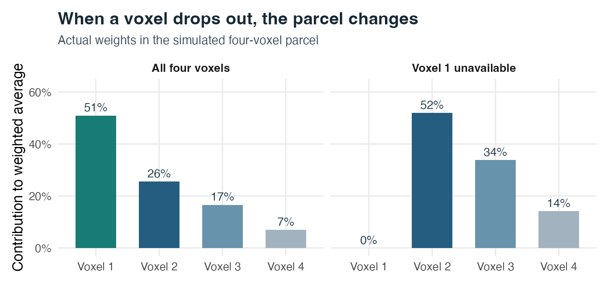
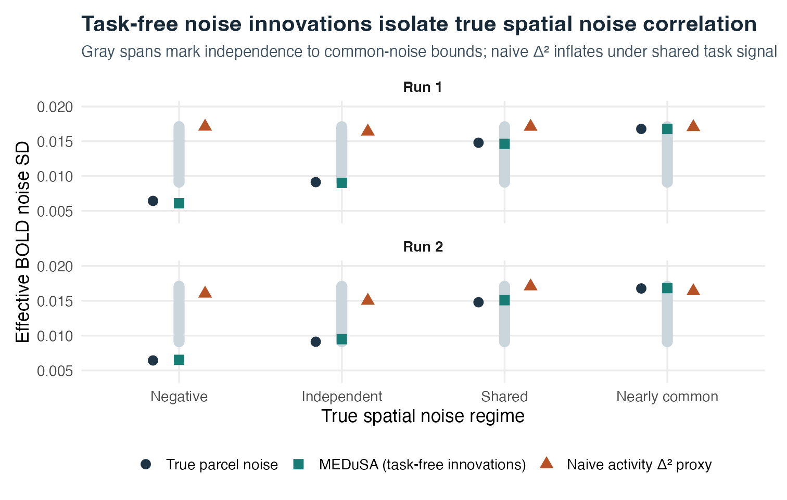
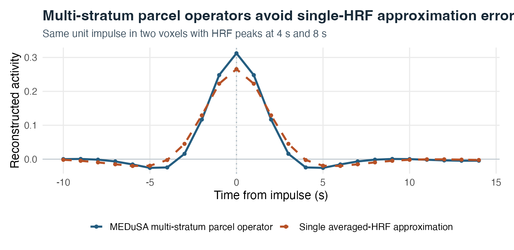
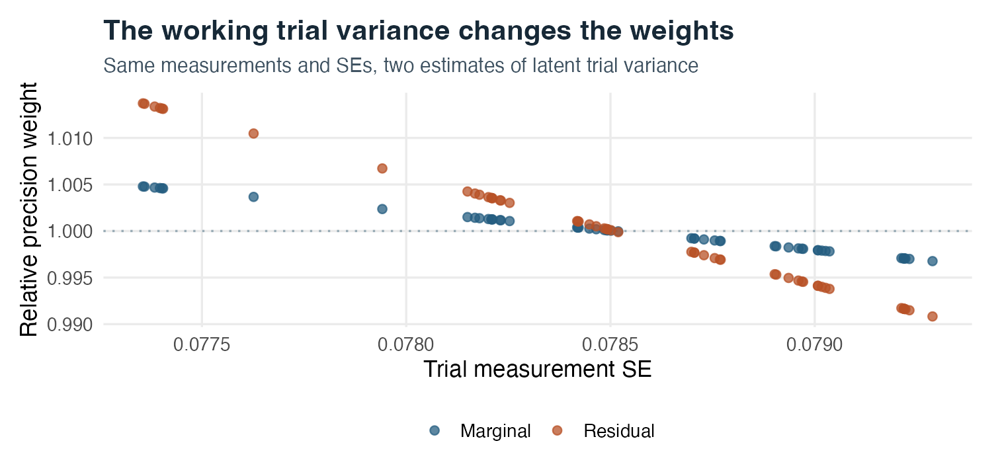
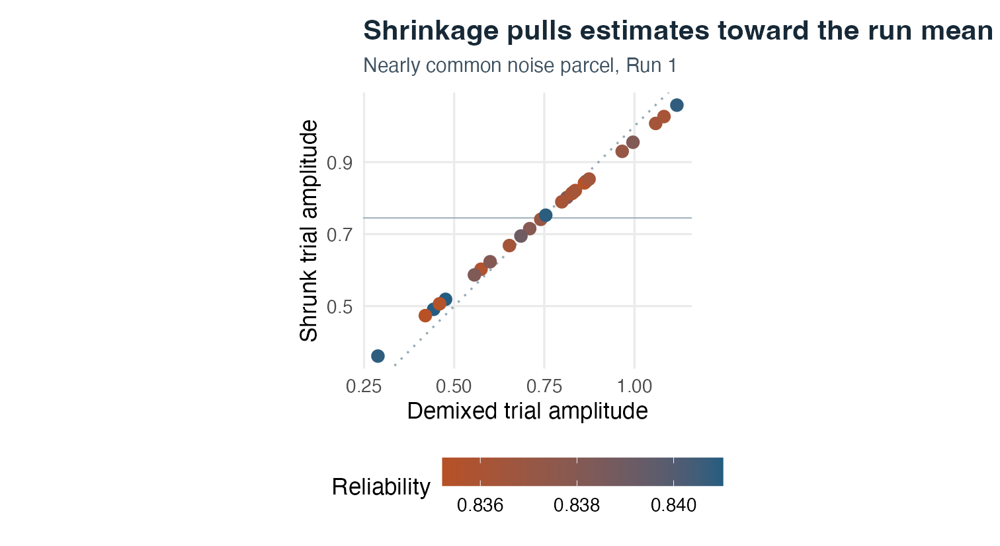
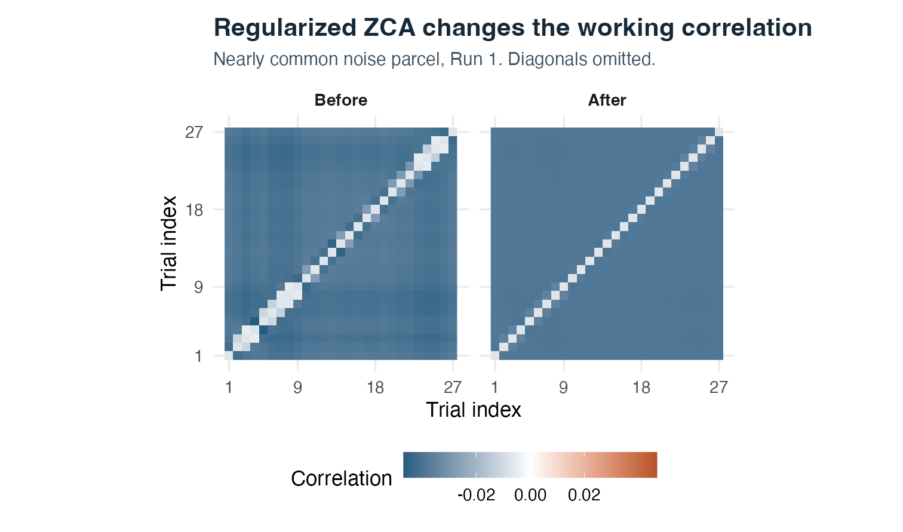

# Recommended participant-level parcel panel call (Steps 3 + 4 combined)
ep <- decon_epoch_regression(
deconvolution = decon,
covariates = covariates, # or NULL for covariate-agnostic panel
events = events,
target_condition = "feedback",
lags = seq(-2, 4, by = 1),
parcel_groups = parcel_ids, # activates aggregate_by_parcel = TRUE
source_model = "impulse",
readout_kernel = "triangle",
demix_other_events = TRUE,
demix_target_trials = TRUE,
demix_within_trial = FALSE, # leave FALSE when feeding medusa_multilag_infer()
restore_scale = TRUE,
tau2_mode = "auto",
whiten_panel = TRUE,
return_panel = TRUE
)
# Attach participant ID explicitly before stacking across the cohort:
ep$panel[, id := subject_id]Step 4: Parcel Aggregation and Analysis Panels
Precision-weighted spatial pooling, task-free spatial noise propagation, and group-ready panel columns
6.1 Overview
Most cognitive neuroscience hypotheses are tested at the level of anatomical regions or functional parcels rather than noisy individual voxels. However, where and how you average across voxels matters enormously. Averaging raw BOLD before Step 1 blurs distinct intra-parcel vascular delays and cancels opposite-signed tuning only if signs oppose; conversely, fitting single-trial regressions voxel-by-voxel in Step 3 and averaging noisy beta estimates afterward throws away high-SNR parcel variance estimation (tau2_bio), distorts ZCA whitening, and ignores spatial noise correlations among neighboring voxels when computing parcel standard errors.
Step 4—executed seamlessly inside decon_epoch_regression(..., parcel_groups = parcel_ids)—aggregates continuous deconvolved activity across voxels within each parcel after voxel-specific deconvolution (preserving per-stratum HRFs and \(\text{AR}(p)\) whiteners) and before epoch de-mixing, Empirical-Bayes weighting, and ZCA whitening. Crucially, MEDuSA combines exact multi-stratum parcel operators (\(\sum_v u_v D_v F_v\)) with task-free whitened noise_innovations from Step 2 to measure true within-parcel spatial noise covariance—avoiding the classic pitfall where shared task-evoked activity inflates estimated parcel noise—and exports a tidy, self-contained panel carrying both within-unit (precision_weight) and cohort-comparable (precision_weight_cohort) weights plus cross-parcel shared_noise_loading vectors for Step 5–6 inference.
NotePosition in the MEDuSA Pipeline
Step 2 decon + parcel_groups vector \(\longrightarrow\) Step 4 (decon_epoch_regression(..., parcel_groups = ...) ) \(\longrightarrow\) Subject epochs list & stacked group_panel \(\longrightarrow\) Step 5 (mixed_by / medusa_multilag_infer) & Step 6 (decon_connectivity_repair)
6.2 Goals of Step 4
Step 4 achieves four specific goals when transitioning from voxels to regional analysis panels:
- Pool voxels using cross-run SNR-optimal weights (
parcel_weights): Weight each parcel’s constituent voxels inversely by their cross-run observation-noise variance and upweight voxels with stronger cross-fitted Step 1 task \(R^2\), renormalizing automatically if a voxel drops out in one run. - Propagate true spatial noise correlation without task contamination: Compute each parcel’s effective observation-noise SD from Step 2’s task-free whitened
noise_innovations(\|Z_r (u \odot \sigma)\|_2), accurately spanning negative, independent, partially shared, and common spatial noise regimes. - Preserve mixed intra-parcel HRF strata exactly: Accumulate per-stratum forward/inverse operator contributions weighted by \(u_v\) whenever voxels inside a parcel belong to different
(HRF, AR)strata, avoiding single-HRF approximation error. - Package a lossless, identity-safe trial panel for Steps 5–6: Deliver aligned raw, de-mixed, Empirical-Bayes-shrunk, and ZCA-whitened parcel columns alongside cohort-comparable precision weights and cross-parcel shared-error loadings.
What Step 4 deliberately leaves to Steps 5–6: Step 4 produces one participant’s parcel panel (and operator summaries). You must attach an explicit participant id column (and session if longitudinal) before stacking participants with data.table::rbindlist() for Step 5–6 population models.
6.3 Inputs: What Step 4 Receives and Why
In addition to the Step 3 inputs (deconvolution, events, target_condition, lags, covariates), Step 4 relies on four key spatial and panel inputs:
| Input | Structure | Why It Is Set Up That Way |
|---|---|---|
parcel_groups |
Named character/factor vector mapping voxel_ids to parcel names (automatically sets aggregate_by_parcel = TRUE) |
Naming elements by voxel_ids guarantees exact column alignment even if subsetting occurred earlier; defaults to hrf_fit$specification$spatial_groups when aggregate_by_parcel = TRUE so Step 1 and Step 4 share identical parcellation boundaries. |
deconvolution$noise_innovations |
Automatic handoff inside deconvolution (n_valid_rows × n_voxels per run) |
Supplies orthonormalized, task-projected AR(\(p\)) innovations from Step 2. Without task-free innovations, any empirical spatial correlation across voxel activity series would mistake shared neural responses to the task for shared scanner noise! |
tau2_mode |
"auto" (default), "marginal", or "residual" |
Controls how latent biological trial-to-trial variance \(\hat{\tau}_{\text{bio}}^2\) is estimated on the high-SNR parcel series to calibrate precision_weight, precision_weight_cohort, and ZCA ("marginal" is covariate-agnostic; "auto" blends residual and marginal MoM when covariates are supplied). |
whiten_panel & restore_scale |
Logical flags (TRUE recommended for both) |
restore_scale = TRUE places all runs of a parcel onto physical BOLD units before cross-run pooling, while whiten_panel = TRUE computes paired within-run ZCA-decorrelated outcome and predictor columns directly on the parcel covariance \(\Sigma_{\text{tot}}\). |
6.4 Outputs: What Step 4 Produces and Why It Is Set Up That Way
Every column in epochs$panel (and companion element on epochs) has a specific downstream consumer—understanding which column to use where prevents subtle modeling mistakes:
| Panel Column / Object Field | Meaning & Units | Why It Is Set Up That Way & Downstream Role |
|---|---|---|
run, trial, event_index, onset, evt_time, parcel |
Composite observation keys (add id before stacking subjects!) |
event_index points to the exact row of events[[run]] for safe behavioral joins; (id, run, event_index, evt_time, parcel) uniquely identifies every row in group_panel. |
decon_raw vs. decon_demixed |
Raw kernel readout vs. cue-subtracted, target-demixed, gain-restored readout | Use decon_demixed (or decon_demixed_whitened) as your primary outcome in Step 5 mixed_by() and medusa_multilag_infer(). Keep decon_raw for auditing how much Step 3’s operator correction changed the signal. |
se_demixed & error_ac1 |
Conditional operator-propagated trial SE; adjacent-trial error correlation | Propagates parcel spatial noise + AR(\(p\)) covariance through \(B_{r,\tau}\). Passed directly into Step 6 (decon_connectivity_repair()) to disattenuate noisy seed predictors! |
precision_weight vs. precision_weight_cohort |
Mean-1 normalized inverse total variance vs. unnormalized \(1 / (\hat{\tau}_{\text{eff}}^2 + s_{ri}^2)\) | Within one participant/parcel, precision_weight averages to 1. Across a multi-subject cohort where participants differ in head motion, run count, or fSNR, use precision_weight_cohort in mixed_by() so noisier participants are appropriately downweighted relative to cleaner participants! |
decon_eb & reliability_trial |
Empirical-Bayes shrunk readout \(\bar{y}_r + \text{rel}_{ri}(y_{ri} - \bar{y}_r)\) | Useful for stabilized single-trial visualization or decoding, not as a direct regression outcome (where shrinkage attenuates slopes unless predictors are matched) or uncorrected regression predictor. |
decon_demixed_whitened & <var>_whitened |
Paired within-run ZCA-decorrelated outcome & centered predictors (whiten_panel = TRUE) |
Decorrelates off-diagonal within-run trial errors while preserving marginal trial variance. Always pair whitened outcomes with whitened predictors (decon_demixed_whitened ~ x_whitened), never mixing whitened and unwhitened variables! |
shared_noise_loading (list-column) & epochs$unit_error_cor |
Per-parcel loading vector reproducing cross-parcel noise correlations (\(R_{\text{err}} \approx \ell \ell^\top\)) | data.table::rbindlist() drops matrix attributes attached to individual subject panels. Embedding shared_noise_loading as a column ensures cross-parcel noise covariance survives stacking (and full RDS/parquet/CSV workflows) for Step 6 shared_error = "auto"! |
6.5 Recommended Settings
6.6 Step 4 Mechanisms Illustrated
6.6.1 1. Precision- & Evidence-Weighted Voxel Aggregation (and Missing-Voxel Renormalization)
Within each parcel \(g\), Step 4 computes fixed cross-run nominal voxel weights \(u_v \propto \frac{1 + \overline{R}^2_{\text{cv},v} / (0.05 + \text{med}(\overline{R}^2_{\text{cv}}))}{\max(\overline{\sigma}_v^2, 0.10\,\text{med}(\overline{\sigma}^2))}\) normalized to \(\sum_{v \in g} u_v = 1\). Quieter, task-responsive voxels contribute more than noisy edge voxels.
What happens if a voxel becomes invalid in one run (e.g., partial FoV dropout or coil artifact in Run 2)? MEDuSA renormalizes the remaining valid voxels in that run to sum to 1 (Figure 6.1). Because renormalization slightly shifts the spatial composition of a small parcel, always inspect decon$scaling[[r]]$status when voxel dropout is non-trivial.

sd = 0.013, 0.018, 0.022, 0.032) and automatic renormalization in Run 2 when Voxel 1 is marked invalid.
6.6.2 2. Why Task-Free noise_innovations Are Essential for Parcel Standard Errors
Suppose four voxels in a parcel have weights \(u\) and marginal noise SDs \(\sigma\). If voxel errors were spatially independent, the parcel noise SD would be \(\sigma_{\text{ind}} = \sqrt{\sum_v u_v^2 \sigma_v^2}\) (0.0091 in simulate_step4.R); if all four voxels shared identical noise (\(\rho_{\text{spatial}} = 1\)), the parcel noise SD would nearly double to \(\sigma_{\text{ceil}} = \sum_v u_v \sigma_v\) (0.0171)!
If you tried to estimate spatial noise correlation from second differences of deconvolved activity (\(\Delta^2 \hat{a}\)), shared task-evoked neural activity across the parcel looks just like shared noise, pegging the estimate near the 0.0171 ceiling even when true noise is independent (0.000) or negatively correlated (-0.20)! By instead projecting u * sigma onto Step 2’s task-free whitened noise_innovations (\(\hat{\sigma}_{\text{parcel}} = \|Z_r (u \odot \sigma)\|_2\)), MEDuSA tracks the true spatial noise SD across all four regimes—including sub-independence negative correlation—to within a few ten-thousandths (Figure 6.2, Table 6.1), and reproduces analytical se_demixed to machine precision (9.71e-17).

-0.20, 0.00, 0.65, 0.95): true oracle spatial SD vs. MEDuSA’s task-free innovation estimator vs. a naive \(\Delta^2\) activity proxy.
Show supporting code
knitr::kable(
d4$metrics[, c("run", "parcel", "rho", "independence", "oracle", "medusa", "naive_d2", "ceiling")],
digits = 4, row.names = FALSE,
col.names = c("Run", "Parcel", "Spatial r", "Indep. Floor", "True SD", "MEDuSA SD", "Naive Δ² Proxy", "Common Ceiling")
)parcel_noise_check.csv).
| Run | Parcel | Spatial r | Indep. Floor | True SD | MEDuSA SD | Naive Δ² Proxy | Common Ceiling |
|---|---|---|---|---|---|---|---|
| run1 | Negative | -0.20 | 0.0091 | 0.0064 | 0.0061 | 0.0171 | 0.0171 |
| run1 | Independent | 0.00 | 0.0091 | 0.0091 | 0.0090 | 0.0164 | 0.0171 |
| run1 | Shared | 0.65 | 0.0091 | 0.0148 | 0.0146 | 0.0171 | 0.0171 |
| run1 | Nearly common | 0.95 | 0.0091 | 0.0168 | 0.0168 | 0.0170 | 0.0171 |
| run2 | Negative | -0.20 | 0.0091 | 0.0064 | 0.0065 | 0.0160 | 0.0171 |
| run2 | Independent | 0.00 | 0.0091 | 0.0091 | 0.0095 | 0.0150 | 0.0171 |
| run2 | Shared | 0.65 | 0.0091 | 0.0148 | 0.0151 | 0.0171 | 0.0171 |
| run2 | Nearly common | 0.95 | 0.0091 | 0.0168 | 0.0168 | 0.0164 | 0.0171 |
6.6.3 3. Exact Multi-Stratum Parcel Operators When Intra-Parcel HRFs Differ
When Step 1 uses voxel-level HRF selection (pooling = "voxel") or separate noise_groups inside a parcel, two voxels in the same parcel can belong to different (HRF, AR) strata (for example, \(4\text{ s}\) and \(8\text{ s}\) peak delays). Approximating the parcel operator with a single averaged HRF \(\bar{h} = \frac{1}{2}(h_4 + h_8)\) produces a 16.6% waveform discrepancy because matrix inversion is nonlinear: \(\frac{1}{2}(D_1 F_1 + D_2 F_2) \neq D(\bar{h}) F(\bar{h})\)! Step 4 avoids this approximation by accumulating exact stratum-by-stratum forward/inverse products \(\sum_s w_s D_s F_s\) (Figure 6.3).

MEDuSA multi-stratum parcel operator) vs. a single averaged-HRF approximation when a two-voxel parcel mixes 4 s and 8 s HRFs.
6.6.4 4. Working Trial Variance (tau2_mode), Empirical-Bayes Shrinkage, and Paired ZCA
On the aggregated parcel series, Step 4 estimates latent trial-to-trial biological variance \(\hat{\tau}_{\text{bio}}^2\) ("marginal" from run-centered variance, lag-1 trial differences, and MAD minus expected operator noise; "residual" from covariate regression residuals minus \(\operatorname{tr}((I - P_X)\Omega)\)). Different \(\hat{\tau}_{\text{bio}}^2\) estimates adjust how steeply precision_weight varies across trials (Figure 6.4), govern decon_eb shrinkage toward the run mean (Figure 6.5), and set the biological covariance component \(\hat{\tau}_{\text{ZCA}}^2 M_{\text{post}} M_{\text{post}}^\top\) inside paired within-run ZCA whitening (Figure 6.6).

precision_weight vs. se_demixed under "marginal" and "residual" working trial-variance modes.

decon_eb) vs. decon_demixed colored by reliability_trial (Nearly common parcel, Run 1).

Nearly common parcel, Run 1).
Mathematical Reference: Innovation Spatial Covariance & Cross-Parcel Loadings
- Within-parcel effective noise variance: Let \(Z_r \in \mathbb{R}^{m_r \times V}\) denote Step 2’s column-unit-norm task-projected whitened innovations (
colSums(Z_r^2) == 1). For parcel \(g\) with valid voxels \(V_g\), normalized weights \(u_g\), and voxel observation-noise SDs \(\sigma_{r,V_g}\), define \(\zeta_{r,g} = Z_{r,V_g} (u_g \odot \sigma_{r,V_g})\). Because \(\mathbb{E}[Z_{r,i}^\top Z_{r,j}] = R_{\text{spatial},ij}\), \(\|\zeta_{r,g}\|_2^2 = \sum_{i,j \in V_g} u_i u_j \sigma_i \sigma_j \hat{R}_{\text{spatial},ij}\) is an unbiased, task-free estimator of parcel observation-noise variance, bounded safely into \([0.05\,\sigma_{\text{ind}}^2, \sigma_{\text{ceil}}^2]\). - Cross-parcel
shared_noise_loading: Normalizing \(\tilde{z}_{r,g} = \zeta_{r,g} / \|\zeta_{r,g}\|_2\) and pooling \(\tilde{Z}_r^\top \tilde{Z}_r\) across runs (weighted by residual degrees of freedom, adjusted for inter-stratum operator overlap, Empirical-Bayes shrunk toward zero on noisy off-diagonals, and projected onto the PSD cone) yieldsunit_error_cor, whose principal factor loadings are stored inpanel$shared_noise_loadingfor Step 6.
Step 4 simulation script · Figure script · Parcel noise table